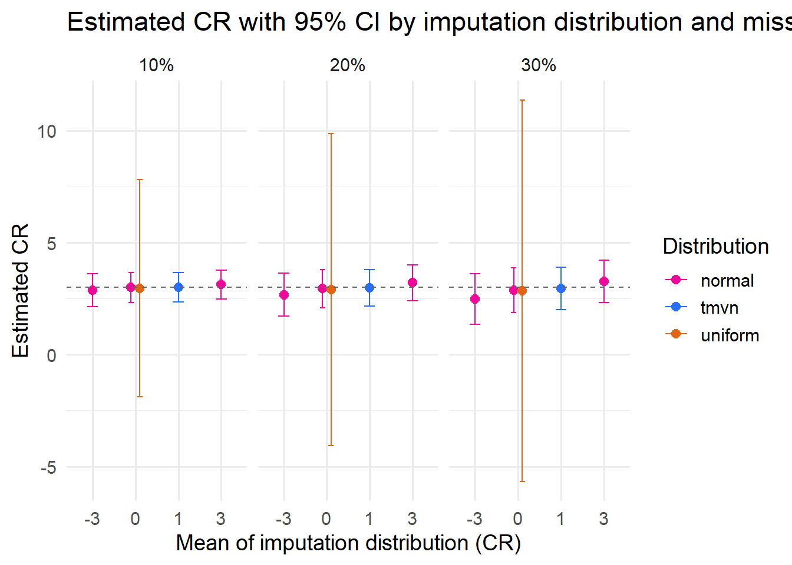
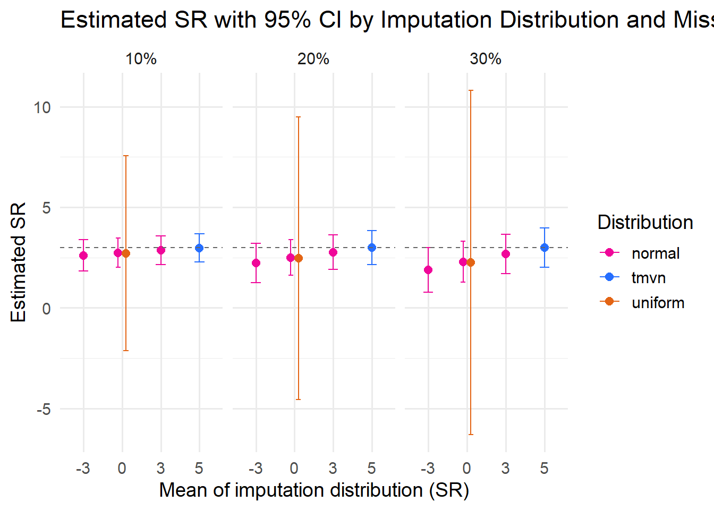
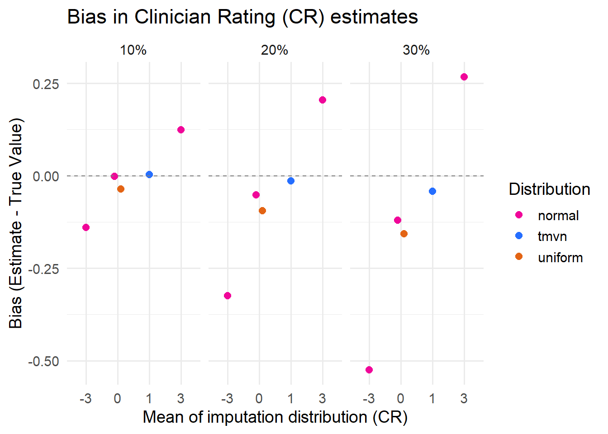
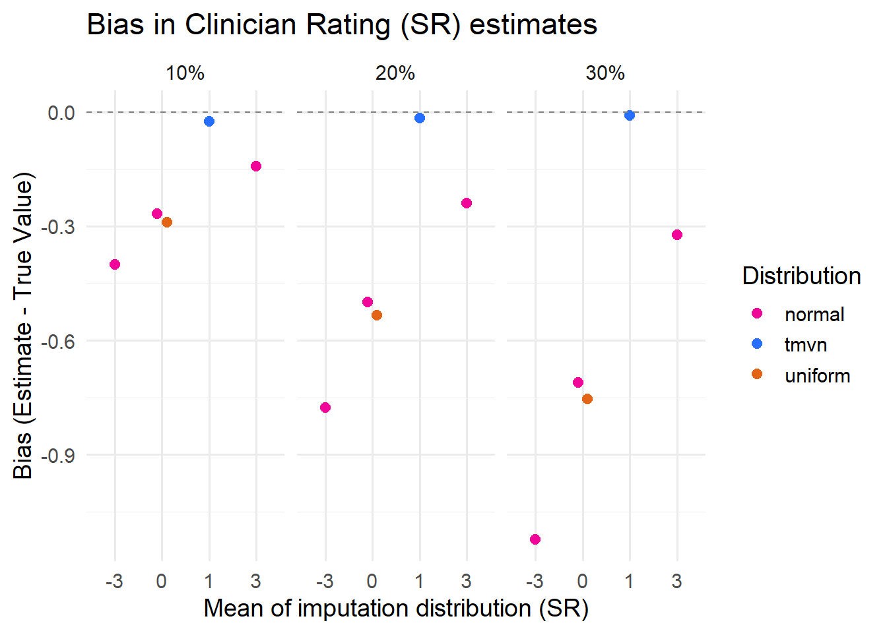

We conducted a Monte Carlo simulation study to evaluate how different imputation distributions and levels of missingness affect the recovery of true effect estimates in a bivariate meta-analysis under MNAR (Missing Not At Random) conditions. The simulation varied the assumed distribution of imputed values: normal, truncated multivariate normal (tmvn), and uniform, and the percentage of missing data (10%, 20%, 30%) for a total of 15 conditions. Each condition was replicated 10,000 times.
The simulated data comprised 50 studies with 100 participants each. For each participant, we generated two continuous outcomes:
CR (clinician rating)
SR (self-report)
These were modeled as linear functions of age, sex, and treatment assignment, with study-level random effects on treatment efficacy. Age was randomly drawn between 18 and 80, while sex and treatment were binary variables. The random effects on treatment response were drawn from a bivariate normal distribution with correlation ρ = 0.7, creating within-study correlation between CR and SR outcomes.
Estimates for each study (effect size and standard error for CR and SR) were obtained via Seemingly Unrelated Regression (SUR). The correlation between CR and SR residuals within each study was also retained.
To simulate MNAR missingness, we used logistic models on the study-level effect estimates:
For CR, lower effects were more likely to be missing.
For SR, higher effects were more likely to be missing.
These mechanisms reflect plausible scenarios of selective reporting, where weak clinician-rated outcomes or strong self-reported outcomes may be more likely to go unreported. To ensure each study had at most one missing outcome (either CR or SR), we resolved any conflicts by retaining the estimate furthest from the overall mean.
Missing outcomes were then imputed using random draws from one of three distributions:
A normal distribution with varying mean (−3, 0, 3)
A truncated multivariate normal (tmvn, with means c(1, 5))
A uniform distribution that reflects high uncertainty from −100 to 100
For each simulated dataset, we performed single stochastic imputation 100 times, applied a bivariate random-effects meta-analysis to each imputed dataset using the mixmeta package, and pooled the estimates and variances using Rubin’s rules.
Data management
Code
library(dplyr)
Caricamento pacchetto: 'dplyr'
I seguenti oggetti sono mascherati da 'package:stats':
filter, lag
I seguenti oggetti sono mascherati da 'package:base':
intersect, setdiff, setequal, union
ggplot(sum_plot, aes(x =factor(meanCR), y = mean_estCR, color = distribution, group = distribution)) +geom_point(position =position_dodge(width =0.4), size =2.5) +geom_errorbar(aes(ymin = lowerCR, ymax = upperCR),position =position_dodge(width =0.4), width =0.25) +geom_hline(yintercept =3, linetype ="dashed", color ="gray40") +facet_wrap(~ target_lab, labeller = label_value) +labs(title ="Estimated CR with 95% CI by imputation distribution and missingness percentage",x ="Mean of imputation distribution (CR)",y ="Estimated CR",color ="Distribution" ) +scale_color_manual(values =c("normal"="#F00699", "tmvn"="#256EFF", "uniform"="#E36414")) +theme_minimal(base_size =14)

The dashed line at 3 indicates the true value of the clinician-rated outcome set in the simulation.
Under the MNAR mechanism used here, lower treatment effects for CR were more likely to be missing, mimicking selective reporting in studies with less favorable results. When imputing missing values using normal distributions, the resulting bias in pooled estimates was directly influenced by the assumed mean: estimates were more upward biased when imputed values were centered on the true effect, and less so when imputation means were set lower. This aligns with expectations, since the missing data for CR were drawn from the lower end of the distribution, representing less successful treatment effects that were selectively unreported.
In contrast, imputations based on uniform distributions produced highly variable estimates with wide confidence intervals, especially at 30% missingness, highlighting the lack of information in this approach.
The truncated multivariate normal (tmvn) distribution yielded the most precise estimates, with narrow confidence intervals and pooled values close to the true effect. This accuracy is due to two main factors: (1) the simulation used the true data-generating parameters to specify the tmvn imputation, which is clearly impossible in applied settings; and (2) tmvn exploits the correlation structure between outcomes, leading to more efficient recovery of missing information.
Plot results for Self-Report Outcome
Code
ggplot(sum_plot, aes(x =factor(meanSR), y = mean_estSR, color = distribution, group = distribution)) +geom_point(position =position_dodge(width =0.4), size =2.5) +geom_errorbar(aes(ymin = lowerSR, ymax = upperSR),position =position_dodge(width =0.4), width =0.25) +geom_hline(yintercept =3, linetype ="dashed", color ="gray40") +facet_wrap(~ target_lab, labeller = label_value) +labs(title ="Estimated SR with 95% CI by Imputation Distribution and Missingness Percentage",x ="Mean of imputation distribution (SR)",y ="Estimated SR",color ="Distribution" ) +scale_color_manual(values =c("normal"="#F00699", "tmvn"="#256EFF", "uniform"="#E36414")) +theme_minimal(base_size =14)

The dashed line at 3 represents the true value of the self-reported outcome (SR) defined in the simulation.
In this MNAR scenario, studies reporting more positive SR treatment effects were more likely to have missing data, reflecting a bias against reporting favorable self-reports. As with the CR outcome, imputations based on normal distributions produced biased estimates: when imputing with distributions centered near the true value, the resulting pooled estimates were downward biased, because the missing values (which were more positive) were systematically underestimated.
The uniform distribution again led to wide and highly variable confidence intervals, particularly at higher missingness levels (e.g., 30%), making it the least informative method.
Truncated multivariate normal imputations yielded more accurate and stable estimates for SR as well. These imputations benefited from incorporating the true correlation structure between CR and SR, and from being derived using parameters close to the true data-generating process. As a result, tmvn consistently produced estimates with the narrowest confidence intervals and minimal bias. Again, this level of accuracy relies on strong assumptions that are unlikely to be met in real-world scenarios.
ggplot(biascov, aes(x =factor(meanCR), y = bias_CR, color = distribution)) +geom_point(size =2.5, position =position_dodge(width =0.4)) +geom_hline(yintercept =0, linetype ="dashed", color ="gray50") +facet_wrap(~ target_lab) +labs(title ="Bias in Clinician Rating (CR) estimates",x ="Mean of imputation distribution (CR)",y ="Bias (Estimate - True Value)",color ="Distribution" ) +scale_color_manual(values =c("normal"="#F00699", "tmvn"="#256EFF", "uniform"="#E36414")) +theme_minimal(base_size =14)

Code
ggplot(biascov, aes(x =factor(meanCR), y = bias_SR, color = distribution)) +geom_point(size =2.5, position =position_dodge(width =0.4)) +geom_hline(yintercept =0, linetype ="dashed", color ="gray50") +facet_wrap(~ target_lab) +labs(title ="Bias in Clinician Rating (SR) estimates",x ="Mean of imputation distribution (SR)",y ="Bias (Estimate - True Value)",color ="Distribution" ) +scale_color_manual(values =c("normal"="#F00699", "tmvn"="#256EFF", "uniform"="#E36414")) +theme_minimal(base_size =14)

The table below summarizes the average bias and empirical 95% confidence interval (CI) coverage for the clinician-rated (CR) and self-reported (SR) outcomes across 15 simulation conditions. Each condition corresponds to a unique combination of imputation distribution, imputation mean, and missingness percentage. Bias is defined as the average deviation of the estimated effect from the true value, while coverage reflects the proportion of replicates in which the 95% confidence interval included the true effect.
Code
library(knitr)library(kableExtra)
Caricamento pacchetto: 'kableExtra'
Il seguente oggetto è mascherato da 'package:dplyr':
group_rows
Code
bias_coverage_table <- restot %>%group_by(distribution, meanCR, meanSR, target) %>%summarise(Bias_CR =round(mean(res_bias_CR), 2),Bias_SR =round(mean(res_bias_SR), 2),Cover_CR =round(mean(res_cover_CR), 3),Cover_SR =round(mean(res_cover_SR), 3),.groups ="drop" ) %>%arrange(distribution, target, meanCR) %>%mutate(Missingness =paste0(target *100, "%"),Imputation =paste0(distribution, " (", meanCR, ", ", meanSR, ")") ) %>%select(Missingness, Imputation, Bias_CR, Cover_CR, Bias_SR, Cover_SR)# Display the table nicelybias_coverage_table %>%kbl(caption ="Bias and 95% CI Coverage for CR and SR by Imputation Distribution and Missingness",align ="lcccccc",col.names =c("Missingness", "Imputation", "Bias (CR)", "Coverage (CR)", "Bias (SR)", "Coverage (SR)") ) %>%kable_styling(full_width =FALSE, bootstrap_options =c("striped", "hover"))
Bias and 95% CI Coverage for CR and SR by Imputation Distribution and Missingness
Missingness
Imputation
Bias (CR)
Coverage (CR)
Bias (SR)
Coverage (SR)
10%
normal (-3, -3)
-0.14
0.996
-0.40
0.919
10%
normal (0, 0)
0.00
0.995
-0.27
0.964
10%
normal (3, 3)
0.12
0.993
-0.14
0.988
20%
normal (-3, -3)
-0.32
0.999
-0.78
0.747
20%
normal (0, 0)
-0.05
1.000
-0.50
0.936
20%
normal (3, 3)
0.20
0.999
-0.24
0.995
30%
normal (-3, -3)
-0.53
0.998
-1.12
0.492
30%
normal (0, 0)
-0.12
1.000
-0.71
0.886
30%
normal (3, 3)
0.27
1.000
-0.32
0.998
10%
tmvn (1, 5)
0.00
0.995
-0.03
0.991
20%
tmvn (1, 5)
-0.01
1.000
-0.02
0.999
30%
tmvn (1, 5)
-0.04
1.000
-0.01
1.000
10%
uniform (0, 0)
-0.04
0.997
-0.29
0.996
20%
uniform (0, 0)
-0.09
1.000
-0.53
1.000
30%
uniform (0, 0)
-0.16
1.000
-0.75
1.000
The results for the CR outcome show patterns consistent with the imposed MNAR mechanism, where lower treatment effects were more likely to be missing. This led to upward bias in estimates when missing values were imputed from normal distributions centered around the true value, and less bias when imputations were centered on lower means. tmvn imputations yielded nearly unbiased estimates and appropriate coverage, while uniform imputations had modest bias and very wide intervals, resulting in over-coverage.
For the SR outcome, the bias patterns were reversed in direction but stem from the same principle. The MNAR mechanism was designed such that more positive SR treatment effects were more likely to be missing,mimicking a situation in which studies selectively underreport strong self-reported improvements. This selective omission removed values from the upper tail of the SR distribution. When missing values were imputed from distributions centered at or below the true mean, the resulting pooled estimates were systematically too low.
This effect is evident in the simulation results: under normal imputation, SR estimates were increasingly negatively biased as the imputation mean decreased, especially at higher missingness levels. For example, at 30% missingness with a normal distribution centered at −3, the SR bias was −1.12 and coverage dropped below 50%, indicating severely underestimated treatment effects and overly narrow confidence intervals.
In contrast, truncated multivariate normal (tmvn) imputations, which incorporated the correct correlation structure and truncated support, produced nearly unbiased SR estimates and coverage rates near the nominal 95% level across all levels of missingness. This performance was expected in this strongly polarized scenario, where the imputation model closely reflects the data-generating process. Finally, uniform imputations again showed over-coverage due to their inherently wide intervals, despite larger SR bias at high missingness.